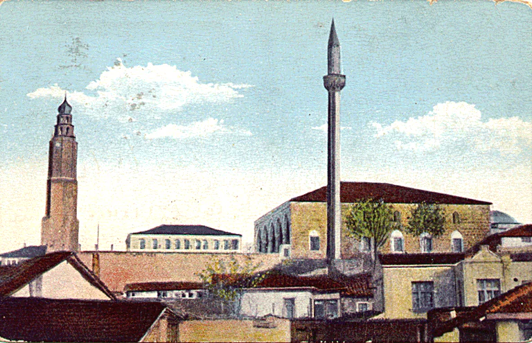
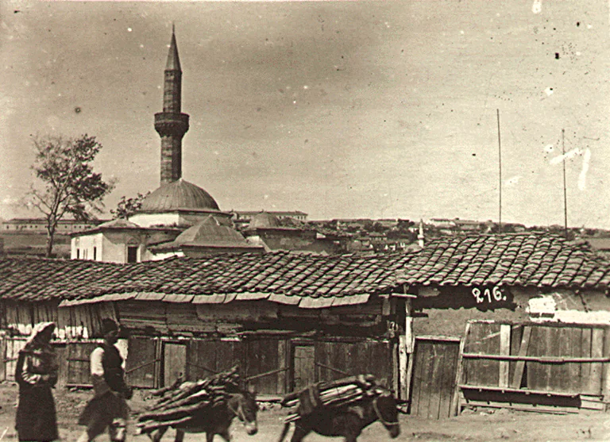

Beschreibung
Die Burmali-Moschee, fotografiert um die Mitte des 19. Jahrhunderts. Die einzige Moschee am rechten Ufer des Vardar. Sie stand direkt an der Steinbrücke. Ihren Namen erhielt sie nach dem spiralförmigen (burmali) Schaft ihres Minaretts. Erbaut gegen Ende des 15. Jahrhunderts, abgerissen 1925, um an ihrer Stelle das Offiziersheim zu bauen.

Die Burmali-Moschee und einige Gebäude um sie herum. Eine noch ungestaltete Straße. Sammelplatz der Warenfuhrleute mit Ochsengespannen. - Ende des 19. Jahrhunderts

Die Burmali-Moschee - 1912 - 1918. Der südliche Zugang zur Steinbrücke mit dicht aneinandergereihten Händler- und Handwerkerläden.

Die Burmali-Moschee mit einem Teil der Steinbrücke und der Promenade daneben. Links davon die Gebäude direkt am Eingang der Steinbrücke, in denen sich Läden und Handwerker befanden. - 1910er Jahre.

Die Burmali-Moschee - Anfang der 1920er Jahre. Vor der Brücke sind die ersten Kioske für Dienstleistungen und Verkauf zu erkennen. Die Kioske haben eine betonte Architektur im Detail, d. h. in der Gestaltung der Dächer.

Burmali-Moschee - 1920.

Die Hatundžuk-Moschee mit der Türbe. Im Hintergrund das Minarett der Jahja-Pascha-Moschee. Die Hatundžuk-Moschee stammt aus dem Jahr 1511. Erbauerin war Hani Hatun, eine der Töchter Jahja Paschas. Der Name Hatundžuk bedeutet übersetzt „kleine Herrin (Dame)“ oder „Fräulein“. - Ende des 19. Jahrhunderts.

Die Hadži-Balaban-Moschee. Sie liegt zwischen dem Kuršumli-Han und der Dukandžik-Moschee. Erbaut im 15. Jahrhundert. (Ende des 19. Jahrhunderts)

Der Begturm (oder Feudalturm). Dieser Turm gehörte einem Beg. Er steht vor dem Haupteingang des heutigen Hauses der Armee der R. Mazedonien. Die Bauzeit ist unbekannt; man vermutet, dass er Ende des 17. oder Anfang des 18. Jahrhunderts errichtet wurde. Das Foto stammt aus dem 19. Jahrhundert.

Der Begturm Ende des 19. Jahrhunderts.

Der Begturm Anfang des 20. Jahrhunderts.

Der Begturm, 1910er Jahre.

Die alte Kazandžiler-Moschee, in unmittelbarer Nähe des Kuršumli-Han. Im 15. Jahrhundert erbaut, bekannt als Moschee der Kesselschmiede. (heute nicht mehr vorhanden)

Dukandžik-Moschee, erbaut Mitte des 16. Jahrhunderts.

Der Kuršumli-Han, erbaut Mitte des 16. Jahrhunderts. Ein monumentaler Bau der islamischen Profanarchitektur. Er steht im alten Basar von Skopje, gleich neben dem heutigen Museum Mazedoniens.

Der Uhrturm und die Sultan-Murad-Moschee - 1920er Jahre. Der Uhrturm wurde Mitte des 16. Jahrhunderts (1566-1572) als erster Uhrturm im Osmanischen Reich errichtet. Das Uhrwerk und der Meister, der es betreuen sollte, wurden nach der Eroberung der Stadt Szigetvár durch die Türken aus Sziget in Ungarn gebracht. Die Sultan-Murad-Moschee: Sultan Murad II., der Vater Sultan Mehmeds des Eroberers, errichtete diese Moschee 1436 als seine fromme Stiftung.

Sultan-Murad-Moschee, 1910er Jahre.

Uhrturm und Sultan-Murad-Moschee - 1920er Jahre.

Uhrturm und Sultan-Murad-Moschee - 1920er Jahre.

Uhrturm und Sultan-Murad-Moschee - 1920er Jahre.

Uhrturm und Sultan-Murad-Moschee - 1920er Jahre.

Die Gazi-Isa-Beg-Moschee - 1920er Jahre. Errichtet von Isa Beg, dem Sohn Ishak Begs, nach dem Tod seines Vaters als fromme Stiftung. (15. Jahrhundert)

Die Gazi-Isa-Beg-Moschee - 1920er Jahre. Errichtet von Isa Beg, dem Sohn Ishak Begs, nach dem Tod seines Vaters als fromme Stiftung. (15. Jahrhundert)

Die Gazi-Isa-Beg-Moschee - 1920er Jahre. Errichtet von Isa Beg, dem Sohn Ishak Begs, nach dem Tod seines Vaters als fromme Stiftung. (15. Jahrhundert)

Gazi-Isa-Beg-Moschee - 1920er Jahre.

Der türkische Friedhof, im Hintergrund die Gazi-Isa-Beg-Moschee - 1920er Jahre.

Gazi-Isa-Beg-Moschee - der Hof - 1920er Jahre.

Gazi-Isa-Beg-Moschee - der Hof - 1920er Jahre.

Die Mustafa-Pascha-Moschee - 1920er Jahre. Erbaut 1492 vom damaligen Befehlshaber Mustafa Pascha.

Die Mustafa-Pascha-Moschee - 1920er Jahre. Erbaut 1492 vom damaligen Befehlshaber Mustafa Pascha.

Mustafa-Pascha-Moschee - 1920er Jahre.

Die Mustafa-Pascha-Moschee im Hintergrund, darunter teilweise sichtbar die Pascha-Jigit-Beg-Moschee, die älteste Moschee Skopjes. (heute nicht mehr vorhanden) - 1920er Jahre.

Eine Straße im alten Teil der Stadt, im Hintergrund die Ishak-Beg-Moschee oder Aladža-Moschee. Diese Moschee errichtete der Befehlshaber von Skopje, Ishak Beg (Sohn Pascha Jigit Begs, des Eroberers von Skopje), in der ersten Hälfte des 15. Jahrhunderts, 1438. Neben der Moschee ließ er als seine Stiftung auch eine Türbe, eine Medrese, Konaks und weitere Bauten der islamischen Profanarchitektur errichten. 1519 baute Mehmed, ein Enkel Ishak Begs, die Moschee um und fügte die zwei Seitenschiffe hinzu - 1920er Jahre.
Orientierung

Auf der alten Orientierungskarte
Fotoalbum


Thema
 Aquädukt4 Postkarten
Aquädukt4 Postkarten Kale30 Postkarten
Kale30 Postkarten Brücken60 Postkarten
Brücken60 Postkarten Kai58 Postkarten
Kai58 Postkarten Platz46 Postkarten
Platz46 Postkarten Bauten66 Postkarten
Bauten66 Postkarten Christliche Gotteshäuser19 Postkarten
Christliche Gotteshäuser19 Postkarten Muslimische Bauten33 Postkarten
Muslimische Bauten33 Postkarten Offiziersheim29 Postkarten
Offiziersheim29 Postkarten Theater28 Postkarten
Theater28 Postkarten Bahnhof13 Postkarten
Bahnhof13 Postkarten Schulen36 Postkarten
Schulen36 Postkarten Parks12 Postkarten
Parks12 Postkarten Märkte18 Postkarten
Märkte18 Postkarten Straßen38 Postkarten
Straßen38 Postkarten Panorama I60 Postkarten
Panorama I60 Postkarten Panorama II30 Postkarten
Panorama II30 Postkarten Collagen55 Postkarten
Collagen55 Postkarten Hochwasser9 Postkarten
Hochwasser9 Postkarten Erdbeben27 Postkarten
Erdbeben27 Postkarten Skopje 200026 Postkarten
Skopje 200026 Postkarten